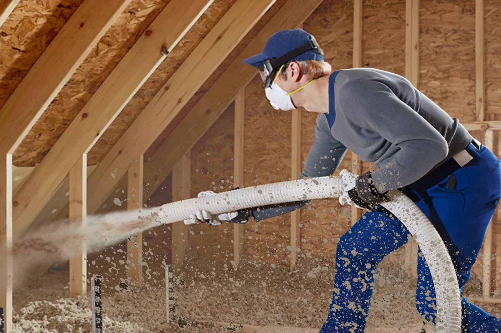
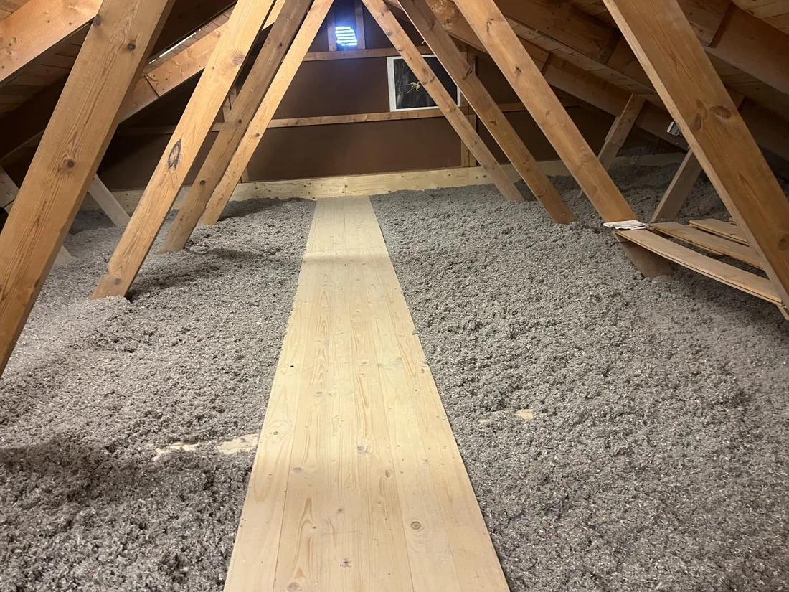
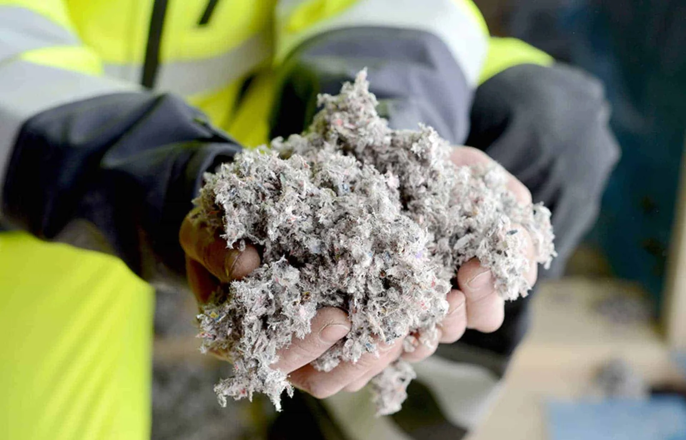
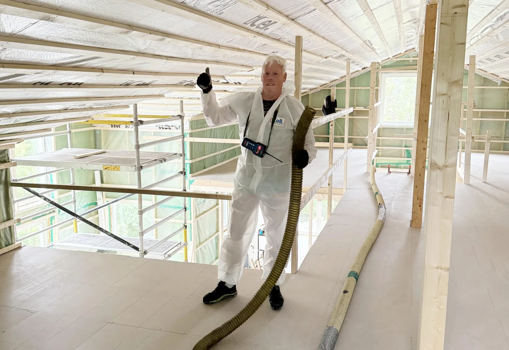
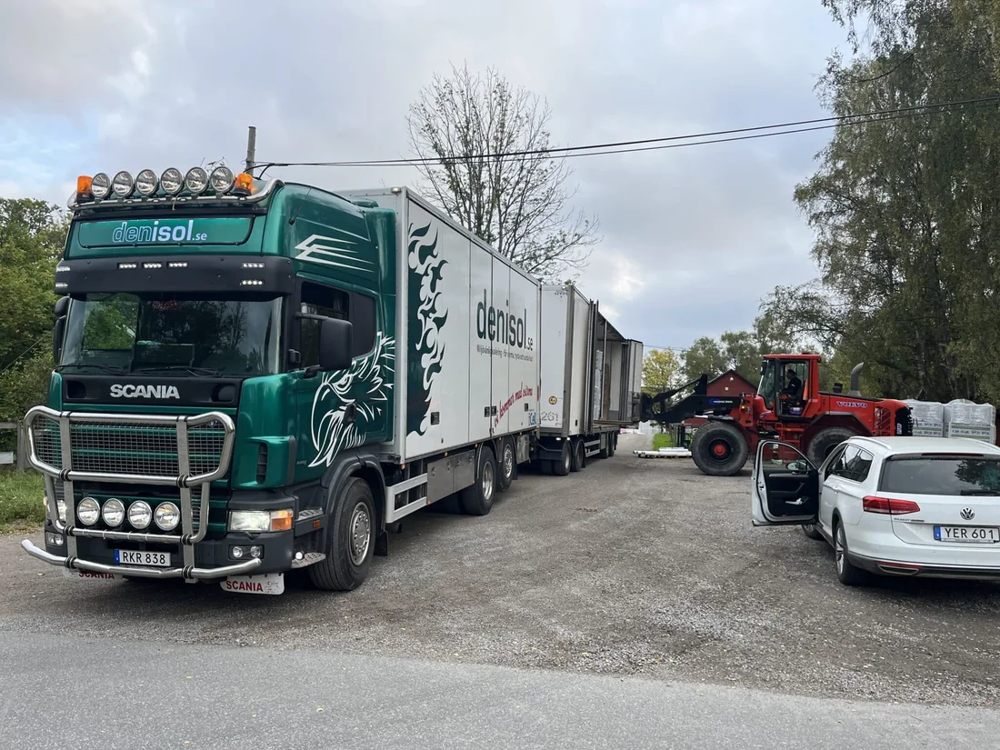
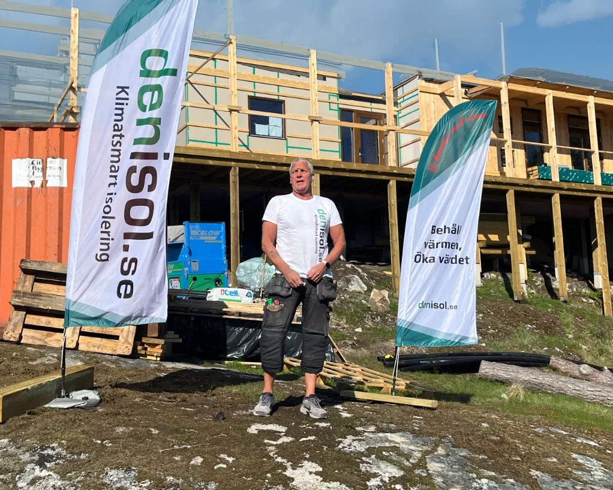
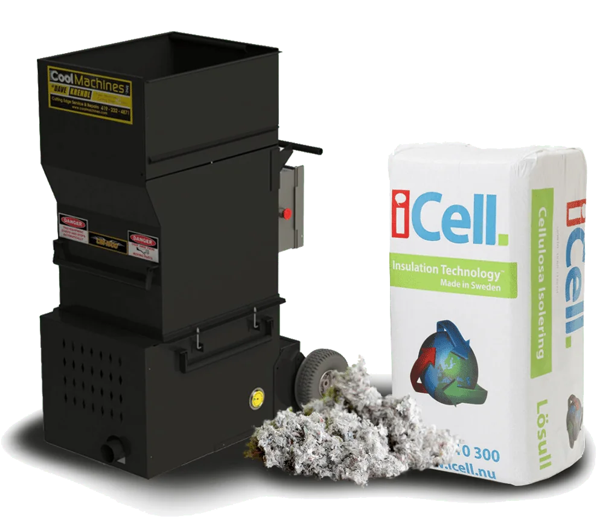

Värmen hör
hemma hos dig.
Cellulosaisolering som gör skillnad för ditt hus.
Vi hjälper dig från första frågan till färdigt arbete.
Hela huset.
Rätt isolering.
Det bästa arbetet börjar med att förstå ditt hus. Vi hjälper dig med cellulosa i allt från vinden till golvet – vid nybygge, renovering och tilläggsisolering.

Vindsisolering
Tilläggsisolera en befintlig vind eller isolera från början. Lösullen fyller ut kring bjälkar och når utrymmen som annars är svåra att komma åt.
Läs om vindsisoleringVäggisolering
Cellulosa som blåses in i slutna väggfack. Ett alternativ vid nybyggnation och vid renoveringar där konstruktionen lämpar sig för det.
Läs om väggisoleringTakisolering
Isolering av takkonstruktioner, med lösning och utförande anpassade efter hur ditt tak är uppbyggt.
Läs om takisoleringGolvisolering
Isolering i golvbjälklag för såväl nya som äldre hus. Vi tittar på konstruktionen och det som redan finns innan vi föreslår en åtgärd.
Läs om golvisoleringFyllnadsisolering
Komplettera befintlig isolering där det är lämpligt. Ett sätt att förbättra isoleringen utan att automatiskt börja om från noll.
Läs om fyllnadsisoleringÅtervunnet papper.
Nytta i ditt hus.
Vår isolering bygger på cellulosa. Små fibrer som fyller utrymmet och hjälper huset att hålla en jämnare temperatur.
Vi arbetar med iCell, svenskproducerad cellulosaisolering av återvunnet papper. Du får både materialkunskap och hjälp att hitta rätt lösning för just din konstruktion.
Lär känna materialet

Riktiga människor.
Ordentligt arbete.
Vi gillar raka besked. Och hus som håller värmen.
Hos Denisol får du kontakt med människor som kan materialet och arbetet. Vi hjälper privatpersoner, fastighetsägare och byggföretag med rådgivning, material och isolering.
Med egen lastbil hämtar vi material direkt från fabriken och levererar vidare. Det ger oss kontroll hela vägen – från material till ditt projekt.
Lär känna DenisolPrata med oss070-779 98 10


Värmen är vår sak.
Omdömet är ditt.
4,9 / 5 på reco.se123 omdömen · kontrollerat 13 oktober 2026“Engagerade. Håller tider och budget. Mycket nöjd med resultatet”
“Snabb återkoppling med positiv respons och agerande.”
Vill du läsa fler? Hämta omdömen direkt från Reco.
När du visar widgeten ansluter din webbläsare till Reco. Du kan också läsa alla omdömen på reco.se.
Händig?
Isolera själv.
Du gör jobbet. Vi hjälper till med material, maskin och råd. Hyr en isoleringsmaskin och hämta lösull på vårt lager i Saltsjö-Boo.
Timmermansvägen 5 · Saltsjö-Boo

Bra att veta.
Enkelt förklarat.
Har du fler frågor? Ring oss på 070-779 98 10, så reder vi ut dem tillsammans.
Var arbetar ni?
Vi arbetar i Mellansverige, med fokus på Stockholm, Uppsala och Mälardalen. Vårt lager finns på Timmermansvägen 5 i Saltsjö-Boo. Kontakta oss för att stämma av ditt projekt och leveransområde.
Kan jag komplettera den isolering som redan finns?
Ofta går befintlig isolering att komplettera, men det beror på material, skick och konstruktion. Vi går igenom förutsättningarna med dig. Läs om fyllnadsisolering
Vad kostar det att isolera?
Priset beror bland annat på yta, konstruktion, isoleringens omfattning och åtkomst. Vi lämnar kostnadsfri offert med fast pris för ditt uppdrag. Aktuella materialpriser finns i webbshoppen.
Kan jag isolera själv och hyra en maskin?
Ja. Du kan köpa lösull och hyra en isoleringsmaskin från Denisol. Material hämtas på vårt lager i Saltsjö-Boo. Kontakta oss om mängd, maskin och tillgänglighet. Så fungerar det
Var hittar jag produktens tekniska egenskaper?
På sidan med produktblad finns iCells produktinformation, prestandadeklarationer och densitetstabell. Följ alltid tillverkarens anvisningar för den aktuella konstruktionen. Öppna produktbladen
Vad kan vi göra
för ditt hus?
Börja med ett samtal. Vi hjälper dig med råd och en kostnadsfri offert till fast pris.